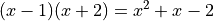
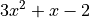
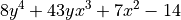

Polynomial Generator: Placed and Routed Circuits in Seconds¶
Background¶
Often, FPGA compilation runtime can be long due to the complexity and nature of problems that are solved in mapping a user’s design onto the fabric of an FPGA. However, if we scope a user’s design to a specific domain, the compilation process can become signficantly simplified.
This tutorial aims to provide a limited scope proof-of-concept of this idea. Consider the mathematical formula called a polynomial. A polynomial equation consists of an expression of variables and coefficients that involves only the operations of addition, subtraction, multiplication and positive integer-powers of variables. Since a polynomical relies on a finite set of mathematical operations, we can devise circuit “generators” for these operators that can be created on-the-fly. These circuit generators (adders, subtractors, multipliers and raise-to-integer-power) have very predictable implementation patterns on FPGA fabric and can thus be placed and internally routed very quickly.
In this application, the polynomials supported have the following attributes:
Coefficients are integers and the first coefficient is positive
No division operations are present
Four mathematical operators: addition, subtraction, multiplication and positive integer powers
RapidWright has three generators to support the
PolynomialGenerator that implement the four supported mathematical
operators. A combination adder/subtractor generator for addition and
subtraction and a multiplier generator for multiplication and raise to
the integer power (chaining multiple multipliers together).
Getting Started¶
1. Prerequisites¶
To run this tutorial, you will need:
RapidWright 2023.1.4 or later
Vivado 2023.1 or later
2. Creating a Simple Polynomial Circuit in Seconds¶
The interface to run the PolynomialGenerator is quite simple:
rapidwright PolynomialGenerator
Which should produce the usage message:
USAGE: <polynomial> <bit width 1 to 18> [--hand-placer]
The polynomial syntax requires explicit operators and expanded set of terms (no parethesis or factors), for example:

should be rewritten as x^2+x-2. Coefficient also will require the
explicit multiplication operator *, for example:

should be rewritten as 3*x^2+x-2.
The mathematical generators will create placed and routed circuits up to 18 bits of width. Although the FPGA fabric can support much larger dimensions, for simplicity we limit this proof-of-concept to 18 bits. Further work could push this limit far beyond 18 bits.
We can generate this polynomial with 16 bit operators with the following command:
rapidwright PolynomialGenerator 3*x^2+x-2 16
With the following output (RWRoute output removed for brevity):
==============================================================================
== Polynomial Generator ==
==============================================================================
Load Device: 1.692s
Init Operators: 0.878s
Build Operator Tree: 0.183s
...
<Removed RWRoute Output>
...
Final Route: 0.474s
Write DCP: 0.455s
------------------------------------------------------------------------------
[No GC] *Total*: 3.681s
Wrote DCP: polynomial.dcp
The resulting DCP, polynomial.dcp should be generated in just a few
seconds and can be examined by Vivado by running:
vivado polynomial.dcp &
(Let’s run it in the background so we can return to the terminal later with Vivado still running).
Once loaded, we can zoom to the placed and routed circuit in clock
region X3Y3, we can also highlight the individual operators by
color by running the following Tcl command in the Vivado Tcl prompt:
foreach c [get_cells] { incr i; highlight_objects -leaf_cells $c -color_index $i }
The resulting circuit should looks similar to this:
{kind=link}
We can also run report_route_status:
report_route_status
Design Route Status
: # nets :
------------------------------------------- : ----------- :
# of logical nets.......................... : 1775 :
# of nets not needing routing.......... : 1659 :
# of internally routed nets........ : 1334 :
# of nets with no loads............ : 292 :
# of implicitly routed ports....... : 33 :
# of routable nets..................... : 116 :
# of fully routed nets............. : 116 :
# of nets with routing errors.......... : 0 :
------------------------------------------- : ----------- :
which shows the design being fully routed without any errors or
violations. We can also check timing with report_timing:
report_timing
Slack (MET) : 0.310ns (required time - arrival time)
Source: mult2_51/mult/DSP_OUTPUT_INST/CLK
(rising edge-triggered cell DSP_OUTPUT clocked by clk {rise@0.000ns fall@0.646ns period=1.291ns})
Destination: mult_34/mult/DSP_A_B_DATA_INST/A[9]
(rising edge-triggered cell DSP_A_B_DATA clocked by clk {rise@0.000ns fall@0.646ns period=1.291ns})
Path Group: clk
Path Type: Setup (Max at Slow Process Corner)
Requirement: 1.291ns (clk rise@1.291ns - clk rise@0.000ns)
Data Path Delay: 0.577ns (logic 0.207ns (35.875%) route 0.370ns (64.125%))
Logic Levels: 0
Clock Path Skew: -0.095ns (DCD - SCD + CPR)
Destination Clock Delay (DCD): 1.763ns = ( 3.054 - 1.291 )
Source Clock Delay (SCD): 2.047ns
Clock Pessimism Removal (CPR): 0.189ns
Clock Uncertainty: 0.035ns ((TSJ^2 + TIJ^2)^1/2 + DJ) / 2 + PE
Total System Jitter (TSJ): 0.071ns
Total Input Jitter (TIJ): 0.000ns
Discrete Jitter (DJ): 0.000ns
Phase Error (PE): 0.000ns
Location Delay type Incr(ns) Path(ns) Netlist Resource(s)
------------------------------------------------------------------- -------------------
(clock clk rise edge) 0.000 0.000 r
0.000 0.000 r clk (IN)
net (fo=107, unset) 2.047 2.047 mult2_51/mult/CLK
DSP48E2_X12Y73 DSP_OUTPUT r mult2_51/mult/DSP_OUTPUT_INST/CLK
------------------------------------------------------------------- -------------------
DSP48E2_X12Y73 DSP_OUTPUT (Prop_DSP_OUTPUT_DSP48E2_CLK_P[41])
0.207 2.254 r mult2_51/mult/DSP_OUTPUT_INST/P[41]
net (fo=1, routed) 0.370 2.624 mult_34/mult/A[9]
DSP48E2_X12Y72 DSP_A_B_DATA r mult_34/mult/DSP_A_B_DATA_INST/A[9]
------------------------------------------------------------------- -------------------
(clock clk rise edge) 1.291 1.291 r
0.000 1.291 r clk (IN)
net (fo=107, unset) 1.763 3.054 mult_34/mult/CLK
DSP48E2_X12Y72 DSP_A_B_DATA r mult_34/mult/DSP_A_B_DATA_INST/CLK
clock pessimism 0.189 3.243
clock uncertainty -0.035 3.207
DSP48E2_X12Y72 DSP_A_B_DATA (Setup_DSP_A_B_DATA_DSP48E2_CLK_A[9])
-0.273 2.934 mult_34/mult/DSP_A_B_DATA_INST
-------------------------------------------------------------------
required time 2.934
arrival time -2.624
-------------------------------------------------------------------
slack 0.310
By default, the clock constraint in the polynomial design is set to 775MHz, or the highest specification of the DSP in speed grade 2 UltraScale+ devices. As can be seen above, this circuit has been placed and routed successfully and has margin to spare to run at this frequency. Of course, as polynomials grow larger, this frequency may be impacted, but it strives to run at the spec of the device.
We can repeat this process for a more complex polynomial in the next step–keep your Vivado instance open so we can reload the next iteration more quickly.
3. More Complex Polynomial and Inspection with the RapidWright Hand Placer¶
For the next step, let’s consider a more complex polynomial:

rapidwright PolynomialGenerator 8*y^4+43*y*x^3+7*x^2-14 18 --hand-placer
This will generate a multi-variable polynomial with inputs x and
y and before the design is routed, will invoke the RapidWright
hand placer that will allow the placement of the polynomial to be
inspected by the user. After running the command, a window should pop
up that looks similar to this:
{kind=link}
This is a simplified device model view in RapidWright of the targeted
device with the operator moduled overlayed in green and orange. The
user can use a mouse scroll wheel up to zoom in (or CTRL + -)
and down to zoom out (or CTRL + =). Alternatively, there are
toolbar buttons to control zoom, or zoom to a selected module (which
can be selected on the right window pane list).
{kind=link}
After zooming in, try selecting one of the module instances by moving the mouse over one of the shapes, click and hold the left mouse button and move the block around the fabric as shown in the animation below:
{kind=link}
Notice that the color of the block changes color based on what area of the fabric is located. Green means a valid placement location, red is invalid and orange is valid although its footprint overlaps with another module. Also notice that when a module instance is being drag selected, it has translucent lines to other module instances. The thickness of these lines is determined by the number of net connections between those two module instances. In this fashion, the modules can be placed or re-placed by hand.
Try moving the add18_0 block away from the rest of the module
instances onto another valid location (where the block turns green) as
shown in the image below:
{kind=link}
If you make a mistake, the hand placer also has an Undo/Redo stack so
CTRL + Z will undo the last movement and CTRL +
SHIFT + Z will redo a movement. When completed, the window
can be closed and the new placement is automatically applied.
Once the window is closed, the PolynomialGenerator will
automatically resume and generate the polynomial.dcp. We can then
use refresh_design in Vivado’s Tcl prompt to re-load the DCP:
refresh_design
set i 0; foreach c [get_cells] { incr i; highlight_objects -leaf_cells $c -color_index $i }
After we zoom in, we should see a very similar floorplan layout to the one chosen interactively in the hand placer:
{kind=link}
Notice in the snapshot above, the add18_0 module instance is in
the top right of the screen, in step with where we placed it in the
hand placer.
Again, we can repeat the Vivado Tcl commands report_route_status
and report_timing to validate the result. Although we do not
replicate the output here, the design should be valid and meet timing
as in step 2.
At this point you are invited to try different polynomials of your own and try making your own placements in the hand placer to explore the several possibilities available to you in this proof-of-concept.